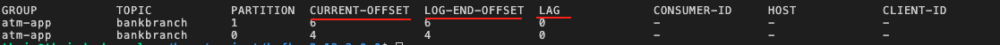
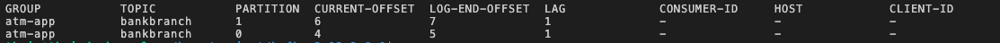

Estimated time needed: 20 minutes
After reading this article, you will be able to learn:
Use message keys to keep messages' original publication state/order
Use consumer offset to control and track message sequential positions in topic partitions
Suppose we want to process transaction messages come from ATM of a bank using Kafka. The message comes from the ATM are in the form of a simple JSON object, including an ATM id and a transaction id like the following example:
json
{"atmid": 1, "transid": 100}
To process the ATM messages, let's first create a new topic called bankbranch.
--topic argument with the name bankbranch. In order to simplify the topic configuration and better
explain how message key and consumer offset work, here we specify --partitions 2 argument to create two partitions for this topic.
You may try other partitions settings for this topic if you are interested to compare the difference.
brainfuck
bin/kafka-topics.sh --bootstrap-server localhost:9092 --create --topic bankbranch --partitions 2
Now let's list all the topics to see if the bankbranch has been created successfully.
brainfuck
bin/kafka-topics.sh --bootstrap-server localhost:9092 --list
We can also use the --describe command to check the details of the topic bankbranch
brainfuck
bin/kafka-topics.sh --bootstrap-server localhost:9092 --describe --topic bankbranch
and you can see bankbranch has two partitions Partition 0 and Partition 1, and messages
will be published to these two partitions in rotation if no message keys are specified.
For example, messages will be published as the following rotation:
Partition 0 -> Partition 1 -> Partition 0 -> Partition 1 ...
Next, we can create a producer to publish some ATM transaction messages.
bankbranch
mipsasm
bin/kafka-console-producer.sh --bootstrap-server localhost:9092 --topic bankbranch
You can try to publish the following ATM messages after it to produce the messages:
json
{"atmid": 1, "transid": 100}
json
{"atmid": 1, "transid": 101}
json
{"atmid": 2, "transid": 200}
json
{"atmid": 1, "transid": 102}
json
{"atmid": 2, "transid": 201}
Then, let's create a consumer in a new terminal window to consume these 5 new messages.
bankbranch
mipsasm
bin/kafka-console-consumer.sh --bootstrap-server localhost:9092 --topic bankbranch --from-beginning
Then, you should see the new 5 messages we just published,
json
{"atmid": 1, "transid": 100}
{"atmid": 2, "transid": 200}
{"atmid": 2, "transid": 201}
{"atmid": 1, "transid": 101}
{"atmid": 1, "transid": 102}
Processed a total of 5 messages
They are not consumed in the same order as they published. This can be an issue if you want to keep the messages consumed in order, especially for areas like financial transactions.
In this step, you will be using message keys to ensure messages with the same key will be consumed with the same order as they published. In the backend, messages with the same key will be published into the same partition and will always be consumed by the same consumer. As such, the original publication order is kept in the consumer side.
Ok, we can now start new producer and consumer with message keys. We will start a new producer with the following message key commands:
--property parse.key=true to let producer now parse message keys--property key.separator=: define the key separator to be the : character, so our message with key now
looks like the following example:
- 1:{"atmid": 1, "transid": 102}. Message key is 1 which is the ATM id, and value is the transaction JSON object.
qml
bin/kafka-console-producer.sh --bootstrap-server localhost:9092 --topic bankbranch --property parse.key=true --property key.separator=:
json
1:{"atmid": 1, "transid": 102}
json
1:{"atmid": 1, "transid": 103}
json
2:{"atmid": 2, "transid": 202}
json
2:{"atmid": 2, "transid": 203}
json
1:{"atmid": 1, "transid": 104}
--property print.key=true --property key.separator=: arguments to print the keys
jboss-cli
bin/kafka-console-consumer.sh --bootstrap-server localhost:9092 --topic bankbranch --from-beginning --property print.key=true --property key.separator=:
Now, you should see the messages with the same key are being consumed
(e.g., trans102 -> trans103 -> trans104) in the same order as they are published.
json
null:{"atmid": 1, "transid": 100}
null:{"atmid": 2, "transid": 200}
null:{"atmid": 2, "transid": 201}
1:{"atmid": 1, "transid": 102}
1:{"atmid": 1, "transid": 103}
1:{"atmid": 1, "transid": 104}
null:{"atmid": 1, "transid": 101}
null:{"atmid": 1, "transid": 102}
2:{"atmid": 2, "transid": 202}
2:{"atmid": 2, "transid": 203}
Processed a total of 10 messages
This is because each topic partition maintains its own message queue, and new messages are enqueued (appended to the end of the queue) when published to the partition. When consumed, the earliest messages will be dequeued.
With two partitions and no message key specified, the previous transaction messages will be published to the two partitions in rotation:
[{"atmid": 1, "transid": 102}, {"atmid": 2, "transid": 202}, {"atmid": 1, "transid": 104}][{"atmid": 1, "transid": 103}, {"atmid": 2, "transid": 203}]
As you can see the transaction messages from atm1 and atm2 are mixed in both partitions. So that it can be very hard
to consume messages from one ATM with the same order as they published.
With message key (the atmid value) specified, the messages from the two ATMs will look like the following:
[{"atmid": 1, "transid": 102}, {"atmid": 1, "transid": 103}, {"atmid": 1, "transid": 104}][{"atmid": 2, "transid": 202}, {"atmid": 2, "transid": 203}]Messages with the same key will always be published to the same partition, so that their publish order will be kept in the message queue of each partition.
As such, we can keep the states or orders of the transactions for each ATM.
Topic partition keeps published messages in a sequence, like a list.
Message offset indicates its position in the sequence. For example,
the offset of an empty Partition 0 bankbranch is 0, and if you publish the first message
to the partition, its offset will become 1.
By using offset in consumer, you can specify the message consumption starting position such as from the beginning or only retrieve the latest messages.
In addition, we normally group related consumers together as a consumer group. For example, we may want to create a consumer for each ATM in the bank and manage all ATM related consumers together in a group.
So let's see how to create a consumer group, which is actually very easy with the --group argument.
following command to create a new consumer within a consumer group called atm-app:
brainfuck
bin/kafka-console-consumer.sh --bootstrap-server localhost:9092 --topic bankbranch --group atm-app
After the consumer within the atm-app consumer group is started, you should expect no messages consumed
because the offsets for both partitions have already reached to the end.
Processed a total of 0 messages
In other words, all messages have been already consumed by previous consumers.
We can verify that by checking consumer group details.
Stop the consumer
Show the details of the consumer group atm-app.
stata
bin/kafka-consumer-groups.sh --bootstrap-server localhost:9092 --describe --group atm-app
Now you should see the offset information for the topic bankbranch:

Recall that we have published 10 messages in total, and we can see the CURRENT-OFFSET column of partition 1 is 6
and CURRENT-OFFSET of partition 0 is 4, and they add up to 10 messages.
The LOG-END-OFFSETcolumn means the last offset or the end of the sequence, which is 6 for partition 1 and 4 for
partition 0 as well. It means both partitions reach to their end and no more messages for consumptions.
Meanwhile, you can check the LAG column which represents the count of unconsumed messages for each partition.
Current it is 0 for all partitions.
Now, let's try to produce more messages and see the updates on the offsets.
json
1:{"atmid": 1, "transid": 105}
json
2:{"atmid": 2, "transid": 204}
and let's switch back to the consumer terminal and check the consumer group details again:
stata
bin/kafka-consumer-groups.sh --bootstrap-server localhost:9092 --describe --group atm-app

You should see the both offsets have been increased by 1, and the LAG columns for both partitions become
1. It means we have 1 new message for each partition to be consumed.
brainfuck
bin/kafka-console-consumer.sh --bootstrap-server localhost:9092 --topic bankbranch --group atm-app
json
{"atmid": 1, "transid": 105}
{"atmid": 2, "transid": 204}
Processed a total of 2 messages
OK, now both partitions reach the end once again but what if I want to consume the messages again from the beginning.
We can do that via resetting offset in the next step.
We can reset index use the --reset-offsets argument
First let's try reset offset to the earliest (beginning) using --reset-offsets --to-earliest.
brainfuck
bin/kafka-consumer-groups.sh --bootstrap-server localhost:9092 --topic bankbranch --group atm-app --reset-offsets --to-earliest --execute
Now the offsets have been set to 0 (the beginning).
brainfuck
bin/kafka-console-consumer.sh --bootstrap-server localhost:9092 --topic bankbranch --group atm-app
and you should see all 12 messages are consumed and all offsets should reach to the partition ends again.
In fact, you can reset the offset to any position. For example, let's reset the offset so that we only consume the last two messages.
Stop the previous consumer
Shift the offset to left by 2 using --reset-offsets --shift-by -2:
brainfuck
bin/kafka-consumer-groups.sh --bootstrap-server localhost:9092 --topic bankbranch --group atm-app --reset-offsets --shift-by -2 --execute
brainfuck
bin/kafka-console-consumer.sh --bootstrap-server localhost:9092 --topic bankbranch --group atm-app
json
{"atmid": 1, "transid": 104}
{"atmid": 1, "transid": 105}
{"atmid": 2, "transid": 203}
{"atmid": 2, "transid": 204}
Processed a total of 4 messages
In this reading, you have learned how to include message keys in publication to keep their message states/order. You have also learned how to reset offset to control the message consumption starting point.
| Date (YYYY-MM-DD) | Version | Changed By | Change Description |
|---|---|---|---|
| 2021-10-27 | 1.0 | Yan Luo | Created initial version of the lab |
Copyright (c) 2021 IBM Corporation. All rights reserved.